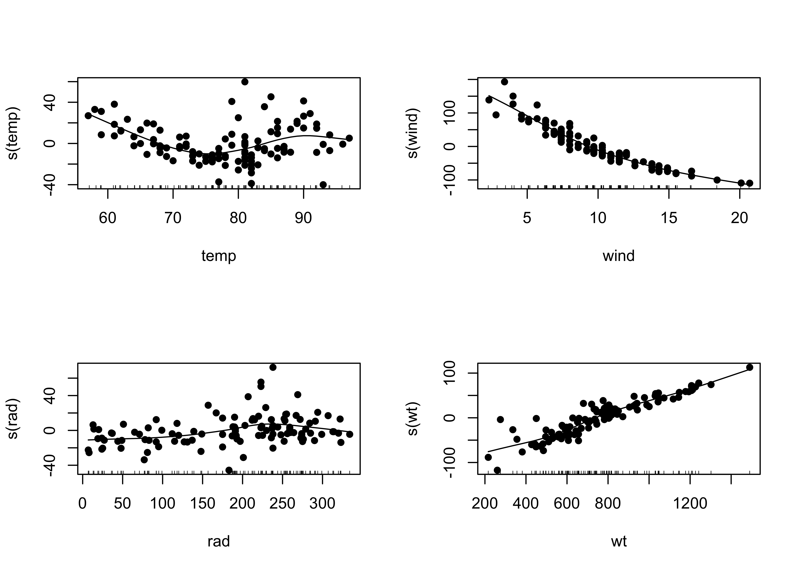

GLMs, GAMs, and CARTs
NOTE: This page has been revised for Spring 2020, but may undergo further edits.
1 Introduction
There are a number of extensions or alternative approaches for building regression-like models for circumstances when the (fairly restrictive) set of assumptions that underlie the use of ordinary least squares for fitting the regression model may be violated (e.g. binary response variables, nonlinearizable relationships, etc.) These alternative approaches are not simply workarounds, but are useful in their own right for exploring or describing relationships between a response variable and several predictors.
2 Generalized Linear Models (GLMs)
Generalized linear models (GLMSs) can be considered as THE general case of the “General Linear Model” that underlies analysis of variance and regression (and note the subtle distinction between “Generalized” and “General”). GLMs (pronounced “glims”) relax many of the assumptions that underlie OLS (Ordinary Least Squares) regression, such as the assumption that the residuals are “i.i.d. normal” (independent, indentically (normally) distributed random (i.e. not autocorrelated) variables). Datasets in which the response variable is binary (0 or 1), a proportion or fraction, or a count usually automatically violate that assumption.
(Note that the “General Linear Model” (which includes ordinary least-squares (OLS) regression and analysis of variance) was developed first, and should be considered as a special case of the more recently developed "Generalized Linear Model (GLM).)
GLMs consist of a linear predictor (that looks like an ordinary regression equation), that together with a “link function”, describes the distribution of the response variable (where that distribution may be one of several from the family of exponential distributions). When the distribution of the dependent variable is gaussian (i.e. normal), and the link function is just the “identity” function, the model is equivalent to the standard OLS regression model.
GLMs thus have two elements that must be chosen, based on the data at hand: 1) a family attribute that describes the distribution of the errors (residuals) which includes, but is not limited to the normal distribution assumed in OLS regression, and a 2) a link function that describes the relationship of the response to the predictor variables. In fitting GLMs, a quantity called the deviance is minimized, and is similar to the sum-of-squares of deviations that is minimized in OLS regression.
This example uses data from Chuck Gottfried’s master’s thesis (Gottfried, C.E., 1992. Residential wood heating and urban air quality : evaluation of a voluntary wood-heating curtailment program. MA Thesis, University of Oregon, Department of Geography, 83 p.) [burn_csv].
The objective this study was to understand the controls of woodstove use in Lane County (i.e. the proprotion of wood-stove chimneys that were “hot” (hotp) during a particular survey). The potential predictor variables included various meteorological variables, like the dew-point temperature (dewpt), where high values (relative to air temperature) indicate generally cool, damp conditions, as well as the binary variable that indicated whether a wood-stove-use curtailment advisory was issued (to reduce air pollution during cool, stable, foggy conditions).
## [1] "day" "hot" "total" "hotp" "tmin" "tmax" "degday" "trange" "precip" "dewpt" "wind"
## [12] "rh7pm" "rhmin" "adv" "week" "api" "wx" "sky"As always, the first thing to do is to examine the data:

The matrix scatter plots suggest that minimum temperature tmin and dewpoint temperature dewpt are correlated with the proportion of wood stoves in use hotp, e.g.:

2.1 OLS regression
Here’s a standard OLS (linear) regression model with hotp as the response and dewpt as the predictor:
##
## Call:
## lm(formula = hotp ~ dewpt)
##
## Coefficients:
## (Intercept) dewpt
## 0.35904 -0.01832##
## Call:
## lm(formula = hotp ~ dewpt)
##
## Residuals:
## Min 1Q Median 3Q Max
## -0.09616 -0.05801 -0.01558 0.05591 0.19037
##
## Coefficients:
## Estimate Std. Error t value Pr(>|t|)
## (Intercept) 0.359043 0.018911 18.986 < 2e-16 ***
## dewpt -0.018318 0.004136 -4.429 0.00011 ***
## ---
## Signif. codes: 0 '***' 0.001 '**' 0.01 '*' 0.05 '.' 0.1 ' ' 1
##
## Residual standard error: 0.07255 on 31 degrees of freedom
## Multiple R-squared: 0.3875, Adjusted R-squared: 0.3678
## F-statistic: 19.61 on 1 and 31 DF, p-value: 0.0001096# diagnostic plots
opar <- par(mfrow = c(2,2))
plot(burn_lm1, which=c(1,2,4))
hist(burn_lm1$residuals, breaks=20)
Note that the histogram (lower-right plot) is nothing like one that resembles a normal distribution–it looks like there are actually two distinct modes.
The regression line superficially looks fine (left below) but if plotted over a larger range (right) shows that unreasonable proporations (greater than 1.0, and less than 0.0) could result.
# plot regression line
opar <- par(mfrow = c(1,2))
plot(hotp ~ dewpt, ylim=c(0,1))
abline(burn_lm1)
# plot regression line again -- larger range
plot(hotp ~ dewpt, ylim=c(0,1), xlim=c(-40,40))
abline(burn_lm1)
2.2 GLM regression
A genearlized linear model can be fit using the glm() function. Because the response here is a proportion (based on a number of individual binary (burn/noburn) observations, the appropriate family is the “binomial” with a “logit” link function, and each observation weighted by the total number of chimneys that were measured.
# generalized linear model
burn_glm1 <- glm(hotp ~ dewpt, binomial(link = "logit"), weights=total)
burn_glm1##
## Call: glm(formula = hotp ~ dewpt, family = binomial(link = "logit"),
## weights = total)
##
## Coefficients:
## (Intercept) dewpt
## -0.59544 -0.08773
##
## Degrees of Freedom: 32 Total (i.e. Null); 31 Residual
## Null Deviance: 462.1
## Residual Deviance: 283.9 AIC: 489.5##
## Call:
## glm(formula = hotp ~ dewpt, family = binomial(link = "logit"),
## weights = total)
##
## Deviance Residuals:
## Min 1Q Median 3Q Max
## -4.4475 -2.2278 -0.4553 2.4243 8.3543
##
## Coefficients:
## Estimate Std. Error z value Pr(>|z|)
## (Intercept) -0.595440 0.028934 -20.58 <2e-16 ***
## dewpt -0.087731 0.006688 -13.12 <2e-16 ***
## ---
## Signif. codes: 0 '***' 0.001 '**' 0.01 '*' 0.05 '.' 0.1 ' ' 1
##
## (Dispersion parameter for binomial family taken to be 1)
##
## Null deviance: 462.07 on 32 degrees of freedom
## Residual deviance: 283.93 on 31 degrees of freedom
## AIC: 489.54
##
## Number of Fisher Scoring iterations: 4# diagnostic plots
opar <- par(mfrow = c(2,2))
plot(burn_glm1, which=c(1,2,4))
hist(burn_glm1$residuals, breaks=20)
Note that the regression diagnostic plots are much better “behaved” than previously. Get predicted values for a range of dewpt values for plotting:
# evaluate predicted values
new_dewpt <- seq(-40,40,.2)
newdata <- data.frame(dewpt=new_dewpt)
hotp_pred1 <- predict(burn_glm1,newdata,type="resp")Here’s the regression line generated by the glm() function–note that it is curvilinear, and approaches the possible limits of a proportion (0 and 1) asymptotically.
# plot regression line
opar <- par(mfrow = c(1,2))
plot(hotp ~ dewpt, ylim=c(0,1))
lines(hotp_pred1 ~ new_dewpt, col="blue")
# plot regression line again
plot(hotp ~ dewpt, ylim=c(0,1), xlim=c(-40,40))
lines(hotp_pred1 ~ new_dewpt, col="blue")
2.3 A second GLM model
Inspection of the matrix scatter plot also suggested that the issuance of a “no-use” advisory (adv = 0 if no advisory issued, adv = 1 if issued) is also correlated with the proportion of stoves in use (in a perverse way, more stoves were in use when a no-burn advisory was issued than when not, which might be expected because the meteorological conditions that lead to the issuance of an advisory are just those when a nice fire would be, nice. Look at the correlations with an interaction (dewpt*adv) between dewpoint and the issuance of an advisory. (Note that in the R formula dewpt*adv means generate the set of predictors dewpt, adv, and dewpt*adv, and not simply include the product between dewpt and adv).
# generalized linear model -- two predictors
burn_glm2 <- glm(hotp ~ dewpt*adv, binomial(link = "logit"), weights=total)
burn_glm2##
## Call: glm(formula = hotp ~ dewpt * adv, family = binomial(link = "logit"),
## weights = total)
##
## Coefficients:
## (Intercept) dewpt adv dewpt:adv
## -0.68873 -0.07166 0.21729 -0.08965
##
## Degrees of Freedom: 32 Total (i.e. Null); 29 Residual
## Null Deviance: 462.1
## Residual Deviance: 268.6 AIC: 478.2##
## Call:
## glm(formula = hotp ~ dewpt * adv, family = binomial(link = "logit"),
## weights = total)
##
## Deviance Residuals:
## Min 1Q Median 3Q Max
## -5.0478 -1.5868 -0.4386 1.6336 8.1552
##
## Coefficients:
## Estimate Std. Error z value Pr(>|z|)
## (Intercept) -0.688733 0.051599 -13.348 < 2e-16 ***
## dewpt -0.071659 0.008667 -8.268 < 2e-16 ***
## adv 0.217289 0.066957 3.245 0.001174 **
## dewpt:adv -0.089646 0.023509 -3.813 0.000137 ***
## ---
## Signif. codes: 0 '***' 0.001 '**' 0.01 '*' 0.05 '.' 0.1 ' ' 1
##
## (Dispersion parameter for binomial family taken to be 1)
##
## Null deviance: 462.07 on 32 degrees of freedom
## Residual deviance: 268.57 on 29 degrees of freedom
## AIC: 478.18
##
## Number of Fisher Scoring iterations: 4The two models can be compared by doing an “analysis of deviance” in a parallel fashion to an analysis of variance. If large, the Deviance value signals that the second model is better than the first, as it is here.
## Analysis of Deviance Table
##
## Model 1: hotp ~ dewpt
## Model 2: hotp ~ dewpt * adv
## Resid. Df Resid. Dev Df Deviance Pr(>Chi)
## 1 31 283.93
## 2 29 268.57 2 15.359 0.0004623 ***
## ---
## Signif. codes: 0 '***' 0.001 '**' 0.01 '*' 0.05 '.' 0.1 ' ' 1The two models can also be compared using their AIC (Akaike Information Criterion) values, a statistic that trades off the goodness of fit of a model against the number of parameters that have to be estimated. In general, we favor a model with a lower AIC. The first model has an AIC value of 489.5402389, while the second has a lower value of 478.1815388, and so is preferred on this basis as well.
Finally, plot some of regression lines
# evaluate predicted values
new_dewpt <- seq(-40,40,.2)
new_adv0 <- rep(0,length(new_dewpt))
newdata_adv0 <- data.frame(dewpt=new_dewpt, adv=new_adv0)
hotp_pred2_adv0 <- predict(burn_glm2, newdata_adv0, type="resp")
new_adv1 <- rep(1,length(new_dewpt))
newdata_adv1 <- data.frame(dewpt=new_dewpt, adv=new_adv1)
hotp_pred2_adv1 <- predict(burn_glm2, newdata_adv1, type="resp")
opar <- par(mfrow = c(1,2))
# plot regression lines
plot(hotp ~ dewpt, ylim=c(0,1))
lines(hotp_pred2_adv0 ~ new_dewpt, col="green")
lines(hotp_pred2_adv1 ~ new_dewpt, col="magenta")
legend("topright", legend = c("no advisory", "advisory"), lty = c(1, 1), lwd = 2,
cex = 1, col = c("green", "magenta"))
# plot regression lines again
plot(hotp ~ dewpt, ylim=c(0,1), xlim=c(-40,40))
lines(hotp_pred2_adv0 ~ new_dewpt, col="green")
lines(hotp_pred2_adv1 ~ new_dewpt, col="magenta")
legend("topright", legend = c("no advisory", "advisory"), lty = c(1, 1), lwd = 2,
cex = 1, col = c("green", "magenta"))
The interpretation is straightforward: as the dew point temperature falls, the liklihood of using a woodstove increases, and it increase faster if a no-burn advisory was issued.
Here is everything on a single scatter diagram:
# plot all
plot(hotp ~ dewpt, ylim=c(0,1), xlim=c(-40,40))
abline(burn_lm1)
lines(hotp_pred1 ~ new_dewpt, col="blue")
lines(hotp_pred2_adv0 ~ new_dewpt, col="green")
lines(hotp_pred2_adv1 ~ new_dewpt, col="magenta")
legend("topright", legend = c("OLS", "GLM", "GLM no advisory", "GLM advisory"), lty = c(1,1,1,1), lwd = 2,
cex = 1, col = c("black", "blue", "green", "magenta"))
3 Another GLM example
This second example of GLMs using a data set and code from Crawley, M.J. (2013) The R Book, Wiley. [island_csv]
The data describe the controls of the indcidence (presence or absence) of a particular bird species on a set of islands, and such controls as the area of the island, its isolation, presence of predators, etc. Such binary response data sets occur frequently in practice, and OLS regression is not appropriate for a number of reasons.
First, look at the data.
 Compare two models for
Compare two models for incidence, one a simple model with area and isolation as predictors, and the other, a model that includes those predictors with interaction.
3.1 Simple model, no interaction
##
## Call:
## glm(formula = incidence ~ area + isolation, family = binomial)
##
## Deviance Residuals:
## Min 1Q Median 3Q Max
## -1.8189 -0.3089 0.0490 0.3635 2.1192
##
## Coefficients:
## Estimate Std. Error z value Pr(>|z|)
## (Intercept) 6.6417 2.9218 2.273 0.02302 *
## area 0.5807 0.2478 2.344 0.01909 *
## isolation -1.3719 0.4769 -2.877 0.00401 **
## ---
## Signif. codes: 0 '***' 0.001 '**' 0.01 '*' 0.05 '.' 0.1 ' ' 1
##
## (Dispersion parameter for binomial family taken to be 1)
##
## Null deviance: 68.029 on 49 degrees of freedom
## Residual deviance: 28.402 on 47 degrees of freedom
## AIC: 34.402
##
## Number of Fisher Scoring iterations: 6The model can be visualized by generating a grid of values of the predictor variables, and “pluggin in” those values to the fitted model using the predict() function, and displaying the results as a perspective plot.
new_area <- seq(from=0, to=10, len=40); new_isolation <- seq(from=-2, to=12, len=40)
new_x <- expand.grid(area=new_area, isolation=new_isolation)
island_glm1_sfc <- matrix(predict(island_glm1, new_x, type="response"),40,40)
persp(new_area, new_isolation, island_glm1_sfc, theta=-150, phi=20, d=1.5,
col="gray", ticktype="detailed", zlim=c(0,1), xlab="Area",
ylab="Isolation", zlab = "Species Incidence")
3.2 A second model, with interaction
Here’s a second model, that allows for interaction between area and isolation:
##
## Call:
## glm(formula = incidence ~ area * isolation, family = binomial)
##
## Deviance Residuals:
## Min 1Q Median 3Q Max
## -1.84481 -0.33295 0.02027 0.34581 2.01591
##
## Coefficients:
## Estimate Std. Error z value Pr(>|z|)
## (Intercept) 4.0313 7.1747 0.562 0.574
## area 1.3807 2.1373 0.646 0.518
## isolation -0.9422 1.1689 -0.806 0.420
## area:isolation -0.1291 0.3389 -0.381 0.703
##
## (Dispersion parameter for binomial family taken to be 1)
##
## Null deviance: 68.029 on 49 degrees of freedom
## Residual deviance: 28.252 on 46 degrees of freedom
## AIC: 36.252
##
## Number of Fisher Scoring iterations: 7island_glm2_sfc <- matrix(predict(island_glm2, new_x, type="response"),40,40)
persp(new_area, new_isolation, island_glm2_sfc, theta=-150, phi=20, d=1.5,
col="gray", ticktype="detailed", zlim=c(0,1), xlab="Area",
ylab="Isolation", zlab = "Species Incidence")
## Analysis of Deviance Table
##
## Model 1: incidence ~ area + isolation
## Model 2: incidence ~ area * isolation
## Resid. Df Resid. Dev Df Deviance Pr(>Chi)
## 1 47 28.402
## 2 46 28.252 1 0.15043 0.6981The comparison here suggests that the simpler model is better. This could also be expected because in the simpler model, the z-statistic test of the significance of the regression coefficients shows that the coefficients of area and isolation are both significant, whereas in the second model, none of the coefficeints are significant.
Another way to look at the relationships is via two bivariate models:
##
## Call:
## glm(formula = incidence ~ area, family = binomial)
##
## Deviance Residuals:
## Min 1Q Median 3Q Max
## -1.5709 -0.9052 0.3183 0.6588 1.8424
##
## Coefficients:
## Estimate Std. Error z value Pr(>|z|)
## (Intercept) -2.1554 0.7545 -2.857 0.004278 **
## area 0.6272 0.1861 3.370 0.000753 ***
## ---
## Signif. codes: 0 '***' 0.001 '**' 0.01 '*' 0.05 '.' 0.1 ' ' 1
##
## (Dispersion parameter for binomial family taken to be 1)
##
## Null deviance: 68.029 on 49 degrees of freedom
## Residual deviance: 50.172 on 48 degrees of freedom
## AIC: 54.172
##
## Number of Fisher Scoring iterations: 5##
## Call:
## glm(formula = incidence ~ isolation, family = binomial)
##
## Deviance Residuals:
## Min 1Q Median 3Q Max
## -1.8537 -0.3590 0.1168 0.6272 1.5476
##
## Coefficients:
## Estimate Std. Error z value Pr(>|z|)
## (Intercept) 8.5223 2.4511 3.477 0.000507 ***
## isolation -1.3416 0.3926 -3.417 0.000633 ***
## ---
## Signif. codes: 0 '***' 0.001 '**' 0.01 '*' 0.05 '.' 0.1 ' ' 1
##
## (Dispersion parameter for binomial family taken to be 1)
##
## Null deviance: 68.029 on 49 degrees of freedom
## Residual deviance: 36.640 on 48 degrees of freedom
## AIC: 40.64
##
## Number of Fisher Scoring iterations: 6Take a look at two scatter plots with fitted curves using area and isolation as individual predictors.
par(mfrow=c(1,2))
xv<-seq(0,9,0.01)
yv<-predict(island_glma,list(area=xv),type="response")
plot(area,incidence)
lines(xv,yv, lwd=2)
xv2<-seq(0,10,0.1)
yv2<-predict(island_glmi,list(isolation=xv2),type="response")
plot(isolation,incidence)
lines(xv2,yv2, lwd=2)
4 Generalized Additive Models (GAMs)
Generalized additive models implement an overall strategy for relaxing the assumption that the relationships between the response variable and predictor variables are linear, by allowing the forms of the relationship to be determined by the data, in a manner analogous to using loess to describe the relationship.
Generalized additive models (GAMs) in some ways can be considered to be the general case of regression analysis, with GLMs being a special case that allows for different kinds of responses (e.g. binary, counts, proportions, as well as “continuous” interval- or ratio-scale data), and OLS regression being a very special case where the residuals are i.i.d. normal, and the relationships between responses and predictors are linear. GAMs are quite flexible, making no assumptions of the forms of the relationships between the response and predictors.
This simple example of GAMs using a data set and code from This second example of GLMs using a data set and code from Crawley, M.J. (2013) The R Book, Wiley: [ozone_csv] The ozone data set is one of the classical data sets that has been used in illustrating analyses is S and R.
Look at the data:
attach(ozone_data)
pairs(ozone_data, panel=function(x,y) {points(x,y); lines(lowess(x,y), lwd=2, col="red")})
4.1 A simple example
Fit a GAM using the gam package, with ozone levels as the response and solar radiation (rad), temperature (temp) and wind speed (wind) as predictors.
## Loading required package: splines## Loading required package: foreach## Loaded gam 1.16.1## Warning in model.matrix.default(mt, mf, contrasts): non-list contrasts argument ignored##
## Call: gam(formula = ozone ~ s(rad) + s(temp) + s(wind))
## Deviance Residuals:
## Min 1Q Median 3Q Max
## -45.691 -10.047 -3.345 7.987 73.117
##
## (Dispersion Parameter for gaussian family taken to be 303.0415)
##
## Null Deviance: 121801.9 on 110 degrees of freedom
## Residual Deviance: 29698.08 on 98.0001 degrees of freedom
## AIC: 963.4174
##
## Number of Local Scoring Iterations: 2
##
## Anova for Parametric Effects
## Df Sum Sq Mean Sq F value Pr(>F)
## s(rad) 1 14374 14374 47.432 5.491e-10 ***
## s(temp) 1 37222 37222 122.829 < 2.2e-16 ***
## s(wind) 1 11464 11464 37.830 1.681e-08 ***
## Residuals 98 29698 303
## ---
## Signif. codes: 0 '***' 0.001 '**' 0.01 '*' 0.05 '.' 0.1 ' ' 1
##
## Anova for Nonparametric Effects
## Npar Df Npar F Pr(F)
## (Intercept)
## s(rad) 3 2.0549 0.1111824
## s(temp) 3 6.6740 0.0003796 ***
## s(wind) 3 9.2619 1.887e-05 ***
## ---
## Signif. codes: 0 '***' 0.001 '**' 0.01 '*' 0.05 '.' 0.1 ' ' 1Note that in GAMs there is no “regression equation” that is produced. Instead, the sense of the relationships between the response and individual predictors is illustrated using “partial residual plots” for individual predictors that show the relationship between that predictor and the differences (residuals) of a prediction of the response using all other predictors.
## Warning in model.matrix.default(mt, mf, contrasts): non-list contrasts argument ignored##
## Call: gam(formula = ozone ~ s(temp) + s(wind) + s(rad) + s(wt))
## Deviance Residuals:
## Min 1Q Median 3Q Max
## -46.541 -9.176 -2.512 7.342 65.089
##
## (Dispersion Parameter for gaussian family taken to be 288.6379)
##
## Null Deviance: 121801.9 on 110 degrees of freedom
## Residual Deviance: 27132.03 on 94.0002 degrees of freedom
## AIC: 961.3863
##
## Number of Local Scoring Iterations: 8
##
## Anova for Parametric Effects
## Df Sum Sq Mean Sq F value Pr(>F)
## s(temp) 1 46069 46069 159.607 < 2.2e-16 ***
## s(wind) 1 11625 11625 40.276 7.705e-09 ***
## s(rad) 1 3694 3694 12.797 0.000551 ***
## s(wt) 1 3270 3270 11.331 0.001106 **
## Residuals 94 27132 289
## ---
## Signif. codes: 0 '***' 0.001 '**' 0.01 '*' 0.05 '.' 0.1 ' ' 1
##
## Anova for Nonparametric Effects
## Npar Df Npar F Pr(F)
## (Intercept)
## s(temp) 3 8.4243 5.133e-05 ***
## s(wind) 3 11.3053 2.125e-06 ***
## s(rad) 3 2.0415 0.11335
## s(wt) 3 3.1162 0.02984 *
## ---
## Signif. codes: 0 '***' 0.001 '**' 0.01 '*' 0.05 '.' 0.1 ' ' 1
## Analysis of Deviance Table
##
## Model 1: ozone ~ s(rad) + s(temp) + s(wind)
## Model 2: ozone ~ s(temp) + s(wind) + s(rad) + s(wt)
## Resid. Df Resid. Dev Df Deviance F Pr(>F)
## 1 98 29698
## 2 94 27132 3.9998 2566.1 2.2226 0.07238 .
## ---
## Signif. codes: 0 '***' 0.001 '**' 0.01 '*' 0.05 '.' 0.1 ' ' 1The F statistic is not very large (which is indicated by its p-value), but the partial residual plots show evidence of a strong effect of including the wind x temp interaction, and that term is significant in the regression equation, so it might be scientifically reasonable to include it.
5 Classification and regression trees (CARTs)
CARTs implement a much different approach for describing the relationship between a continuous or categorical response variable and several predictor variables that makes few assumptions about the nature of the relationship. Instead of an equation (or an R object that is “equation-like” in the sense of turning some plugged-in values of predictor variable values into estimates of the response using the R predict() function), a tree-structure reminiscent of a “binomial key” is constructed, and is used to arrive at a prediction of the response variable at the tip of a branch. When applied to categorical variables, a “classification tree” results, and when applied to continuous variables, a “regression tree” is produced.
This example comes from Crawley, M.J. (2013) The R Book, Wiley.
5.1 A regression-tree example
The easiest way to visualize what a regrssion tree looks like and does is to simply produce one:
library(tree)
ozone_tree1 <-tree(ozone~.,data=ozone_data)
plot(ozone_tree1,type="u")
text(ozone_tree1)
The tree() function produces what amounts to an (upside down) decision tree, where (starting at the top) each level and branch the values of a specific variable are examined, and a decsion is made as to which branch to take based on whether the value of that variable exceeds some threshold, or does not. The values at the tip of each branch show the values of the response variable that prevail under the conditions indicated by the individual branches that were followed.
A second example from Crawley (2013) [Pollute.csv]
Look at the data:

Regression tree for SO2Conc

Printing the object created by tree() provides a text description of the tree and branches:
## node), split, n, deviance, yval
## * denotes terminal node
##
## 1) root 41 22040 30.05
## 2) Industry < 748 36 11260 24.92
## 4) Population < 190 7 4096 43.43 *
## 5) Population > 190 29 4187 20.45
## 10) Wetdays < 108 11 96 12.00 *
## 11) Wetdays > 108 18 2826 25.61
## 22) Temp < 59.35 13 1895 29.69
## 44) Wind < 9.65 8 1213 33.88 *
## 45) Wind > 9.65 5 318 23.00 *
## 23) Temp > 59.35 5 152 15.00 *
## 3) Industry > 748 5 3002 67.00 *The variables and their threshold values are determined by “partitioning” the observations that remain at each step into two groups that maximize the between group variance. This can be illustrated as follows for the first split, where a threhold value of 748 for Industry maximizes the distinctiveness of the two groups.
xcut <- 748
plot(SO2Conc ~ Industry)
lines(c(xcut,xcut),c(min(SO2Conc),max(SO2Conc)), col="blue", lwd=2, lty="dashed")
m1 <- mean(SO2Conc[Industry < xcut])
m2 <- mean(SO2Conc[Industry >= xcut])
lines(c(0,xcut),c(m1,m1), col="blue", lwd=2)
lines(c(xcut,max(Industry)),c(m2,m2), col="blue", lwd=2)
5.2 A “Maptree” example
Denis White (OSU/EPA in Corvallis) developed a package that allows the results of a recursive partitioning and regression tree (“RPART”, same thing as CART…) to be mapped. Here the data consist of bird species distributions and environmental variables for Oregon, and the tree-like partioning derives clusters of data points (hexagonal grid boxes) with similar attributes, and maptree maps them.
## [1] "bird.spp" "x" "y" "jan.temp" "jul.temp" "rng.temp" "ann.ppt" "min.elev"
## [9] "rng.elev" "max.slope"# regression tree of Oregon environmental variables
model_tree1 <- "bird.spp ~ jan.temp+jul.temp+rng.temp+ann.ppt+min.elev+rng.elev+max.slope"
bird_tree1 <- rpart(model_tree1)
plot(bird_tree1)
text(bird_tree1)
“Pruning” (as on a real tree) removes some long, dangly branches…
# prune the tree
group <- group.tree(clip.rpart(rpart(model_tree1), best=7))
plot(clip.rpart(rpart(model_tree1), best=7))
text(clip.rpart(rpart(model_tree1), best=7))
The following code plots the clusters…
# plot the regression tree
names(group) <- row.names(oregon.env.vars)
map.groups(oregon.grid, group=group)
map.key (0.05, 0.6, labels=as.character(seq(6)),pch=19, head="node")
lines(oregon.border)
… and redraws the tree to serve as a legend for the map.
draw.tree (clip.rpart(rpart(model_tree1), best=7), nodeinfo=TRUE,
units="species", cases="cells", cex=.7, pch=16, digits=0)
6 Readings
GLMs, GAMs and CARTs are well covered in Chapters 13-18 and 23 in Crawley, M.J. (2013) The R Book, Wiley. To get to the book, visit http://library.uoregon.edu, login, and search for the 2013 edition of the book.
Here’s a direct link, once you’re logged on: http://onlinelibrary.wiley.com/book/10.1002/9781118448908
Kuhnert & Venebles (An Introduction…): p. 141-168, 169-178, 259-300; Maindonald (Using R…): ch. 9